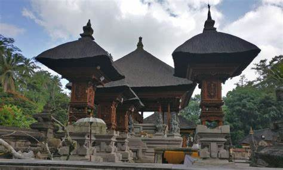
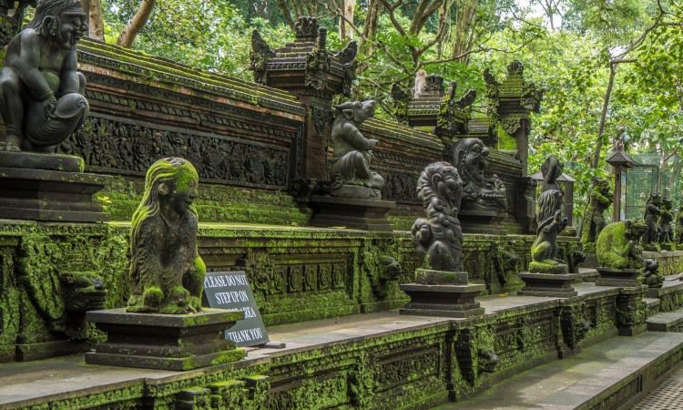

Mandala Suci Wenara Wana
Cagar alam ini adalah rumah bagi lebih dari 700 monyet ekor panjang abu-abu. Tempat ini juga merupakan situs konservasi dan penelitian penting di Bali.

Candi di Wenara Wana
Selain monyet, Wenara Wana juga memiliki kompleks candi yang indah dan sakral, menambah keunikan tempat ini.

Kehidupan Monyet
Pengunjung dapat melihat kehidupan sehari-hari monyet-monyet yang tinggal di hutan ini. Mereka adalah daya tarik utama bagi wisatawan.